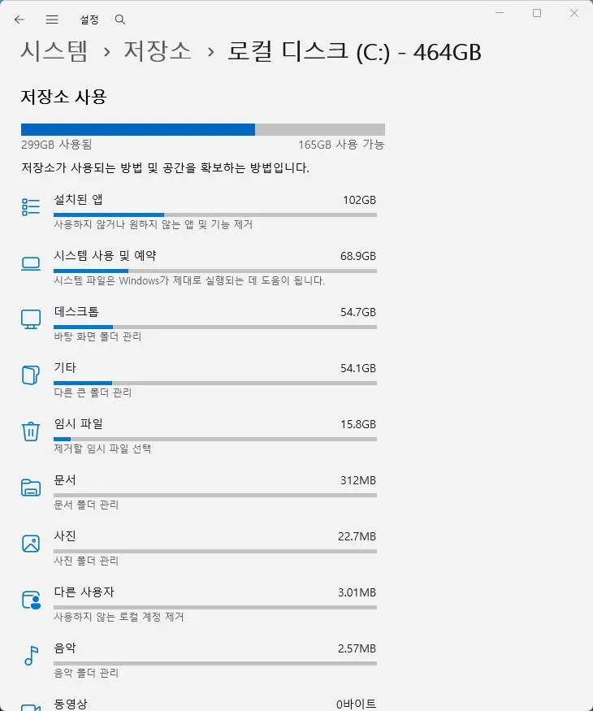
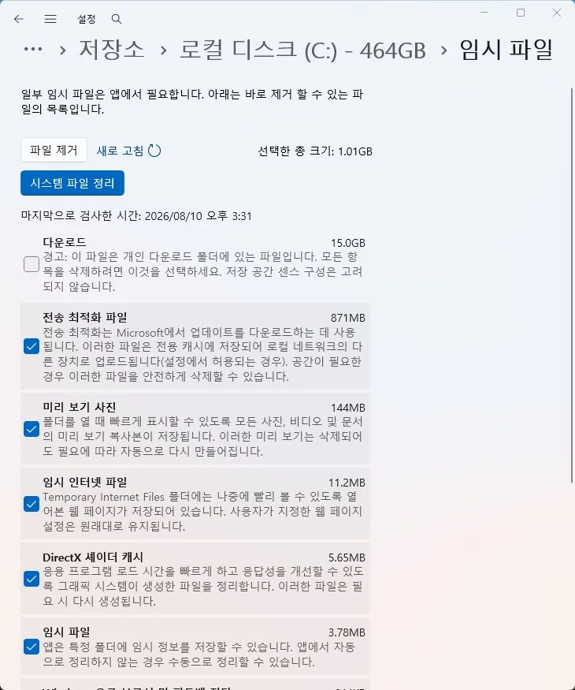

저장공간
C드라이브 용량 부족 원인과 점검 순서
C드라이브 여유 공간이 부족해 경고가 뜨고 업데이트·설치가 안 되는 경우
C드라이브 용량 부족은 단순히 불편한 정도가 아니라 Windows 업데이트 실패, 프로그램 설치 오류, 시스템 속도 저하로 이어질 수 있는 문제입니다. Windows는 정상 동작을 위해 C드라이브에 최소한의 여유 공간(보통 몇 GB 이상)이 필요하기 때문입니다.
가장 먼저 확인할 것은 '무엇이 용량을 차지하고 있는가'입니다. 설정 > 시스템 > 저장공간에서 항목별 용량을 확인하면 Windows Update 파일, 임시 파일, 휴지통 중 어느 것이 원인인지 파악할 수 있습니다.
정리로 어느 정도 해결되더라도 SSD 용량 자체가 작다면(128GB 이하) 근본적으로는 저장장치 용량 업그레이드가 더 확실한 해결책입니다.
디스크 정리 도구로 보이지 않는 공간 소비자도 있습니다. WinSxS 폴더(구성 요소 저장소)는 업데이트 이력이 쌓일수록 수십 GB까지 커질 수 있고, 최대 절전 모드 파일(hiberfil.sys)은 설치된 램 용량만큼 통째로 차지합니다. 단순히 큰 파일을 지우는 것보다 디스크 정리에서 '시스템 파일 정리'를 선택해야 이런 항목들까지 확인할 수 있습니다.
이 가이드가 필요한 상황
- C드라이브 표시줄이 빨간색으로 바뀌고 '이 드라이브의 공간이 부족합니다' 경고가 뜬다.
- Windows Update 설치가 '디스크 공간이 부족합니다' 오류로 실패한다.
- 프로그램 설치나 파일 저장이 갑자기 안 된다.
먼저 확인할 항목
- 저장공간 항목별 확인 — 무엇이 용량을 차지하는지 알아야 올바른 정리 방법을 선택할 수 있습니다. 설정 > 시스템 > 저장공간에서 임시 파일, 앱, 문서 등 항목별 용량을 확인하세요.


- 디스크 정리로 시스템 파일 제거 — Windows 업데이트 찌꺼기와 이전 버전 백업이 수 GB에서 수십 GB까지 차지할 수 있습니다. cleanmgr 실행 후 '시스템 파일 정리'를 선택해 Windows 업데이트 정리 파일과 이전 Windows 설치를 삭제하세요.
- 저장 공간 센스 자동 정리 설정 — 매번 수동으로 정리하지 않아도 임시 파일이 주기적으로 자동 삭제됩니다. 설정 > 시스템 > 저장공간에서 저장 공간 센스를 켜고 정리 주기를 설정하세요.
원인을 더 정확히 나누는 방법
hiberfil.sys가 용량을 많이 차지하는 이유
최대 절전 모드를 사용하면 시스템 메모리 내용을 저장하기 위한 hiberfil.sys 파일이 C드라이브에 생성되며, 보통 설치된 RAM 용량의 상당 부분(많게는 75% 이상)을 차지합니다. 최대 절전 모드를 쓰지 않는다면 관리자 권한 명령 프롬프트에서 powercfg /hibernate off를 실행해 이 파일을 완전히 제거하고 공간을 확보할 수 있습니다.
확인 결과에 따른 다음 단계
- 정리 후에도 금방 다시 차는 경우 — 일회성 정리보다 저장 공간 센스로 자동 정리를 설정하는 것이 근본적인 해결에 가깝습니다.
- 정리로도 여유 공간이 크게 부족한 경우 — SSD 용량 자체가 작은 것이 원인일 가능성이 높으니 파티션 조정이나 저장장치 업그레이드를 고려하세요.
피해야 할 실수
- 용량이 뭘 차지하는지 확인하지 않고 무작정 개인 파일부터 지우는 것
- Windows.old 폴더를 탐색기에서 직접 삭제하려다 권한 오류로 실패하는 것(디스크 정리 도구를 통해 삭제해야 함)
실제 사용자 사례
저장 공간 센스로 반복 문제 해결
디스크 정리를 할 때마다 며칠 뒤 다시 용량 부족 경고가 뜨던 사례가 있습니다. 저장 공간 센스를 켜서 임시 파일이 주기적으로 자동 삭제되도록 설정하자 이후로는 경고가 다시 나타나지 않았습니다.
포인트: 정리를 반복해도 금방 다시 차오른다면 일회성 정리보다 자동화 설정이 더 효과적입니다.
자주 묻는 질문
- Windows.old 폴더는 지워도 되나요? 이전 Windows 버전으로 되돌릴 계획이 없다면 지워도 됩니다. 단, 탐색기에서 직접 삭제하지 말고 디스크 정리(cleanmgr)의 '시스템 파일 정리' 기능을 사용해야 안전하게 삭제됩니다.
- hiberfil.sys를 지우면 절전 기능을 못 쓰나요? 네, powercfg /hibernate off를 실행하면 최대 절전 모드 자체가 비활성화됩니다. 절전(Sleep) 모드는 별도 기능이라 영향받지 않습니다.
- C드라이브만 작게 나뉘어 있고 D드라이브는 여유가 많은데 어떻게 하나요? 디스크 관리에서 D드라이브의 여유 공간 일부를 줄여 C드라이브에 붙이는 파티션 확장이 가능합니다. 단, 데이터 손실 위험이 있으니 작업 전 반드시 백업하세요.
최종 검토일: 2026-09-16